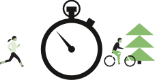
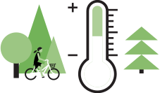

5 Key Ways to Create Healthy Urban Environments
Air pollution
How can we improve air quality in our cities?
There are many solutions available for reducing air pollution in our cities. A variety of measures can be implemented, depending on the characteristics of each city. The following are just some of the possible lines of action:
- Designing cities for pedestrians and cyclists. Cities designed for people —with green areas and clearly delimited spaces— make urban journeys safer and easier as well as more agreeable and healthy.
- Reducing motorised traffic. Cities constructed primarily to facilitate cars generate pollution and promote unhealthy lifestyles.
- Making public transport the backbone. Improving the public transport system and promoting its use greatly reduces air pollution by decreasing private vehicle use and lowering emissions.
You can take a look at the comprehensive solutions proposed by the WHO and at the measures being implemented by cities like Madrid and Barcelona
Noise
How can we reduce noise in our cities?

Urban planning plays a key role in reducing noise levels and promoting healthy lifestyles:
- Urban centres with a population of over 100,000 in the European Union are obliged to provide information on noise pollution by means of noise maps (in Barcelona this mapa is also available to the public, allowing them to check the noise levels on the street where they live).
- Cities are also obliged to develop and implement action plans to reduce noise levels in the areas most affected by the problem. Some of the most common strategies are:
- Low-noise road surfacing
- Limiting traffic volumes
- Reducing speed limits
- Establishing silent zones, such as green spaces
Physical activity
How can we increase physical activity levels in cities?
The design of our cities and urban transportation systems is a crucial factor in boosting physical activity in the population:
- Active transport —getting around on foot or by bicycle— on a daily basis is the most practical and sustainable way to increase physical activity.
- A good public transport network makes it easier for people to walk more and reduces private vehicle use.
- Green spaces are an important factor and provide a safe environment for physical activity.
All these measures are included in this study published in The Lancet, , which analysed physical activity in 14 cities.
Temperature
How can we reduce the number of heat islands in our cities?
Urban planning and transportation planning must prioritise measures that address the heat island effect.
- Improving building insulation to reduce the need for air conditioning.
- Switching to cool urban materials that absorb less solar radiation.
- Increasing urban vegetation to provide more shade and reduce radiant temperature.
- Reducing heat associated with human activities (heating, etc.) to reduce the heat island effect.
Various mitigation plans have been proposed, such as the United States Environmental Protection Agency’s "Reducing Urban Heat Islands: Compendium of Strategies"
Natural spaces
How should green and blue spaces be prioritised in our cities?
The way to prioritise urban green and blue environments is to implement a programme of urban regreening and to link together existing natural spaces in the urban environment:
- Natural spaces must be distributed throughout the urban area if they are to benefit the whole population.
- Interconnected green and blue spaces promote the use of natural spaces for urban mobility.
- Promotion and improve existing urban spaces and, when necessary, create new spaces using empty sites, rooftops, terraces, etc.
- Natural spaces should be suitable for different uses , such as relaxation and social and physical activities, so that they will have a beneficial impact on both mental and physical health.
- Natural spaces should be designed to facilitate use by different population groups children, young people, older people, etc.